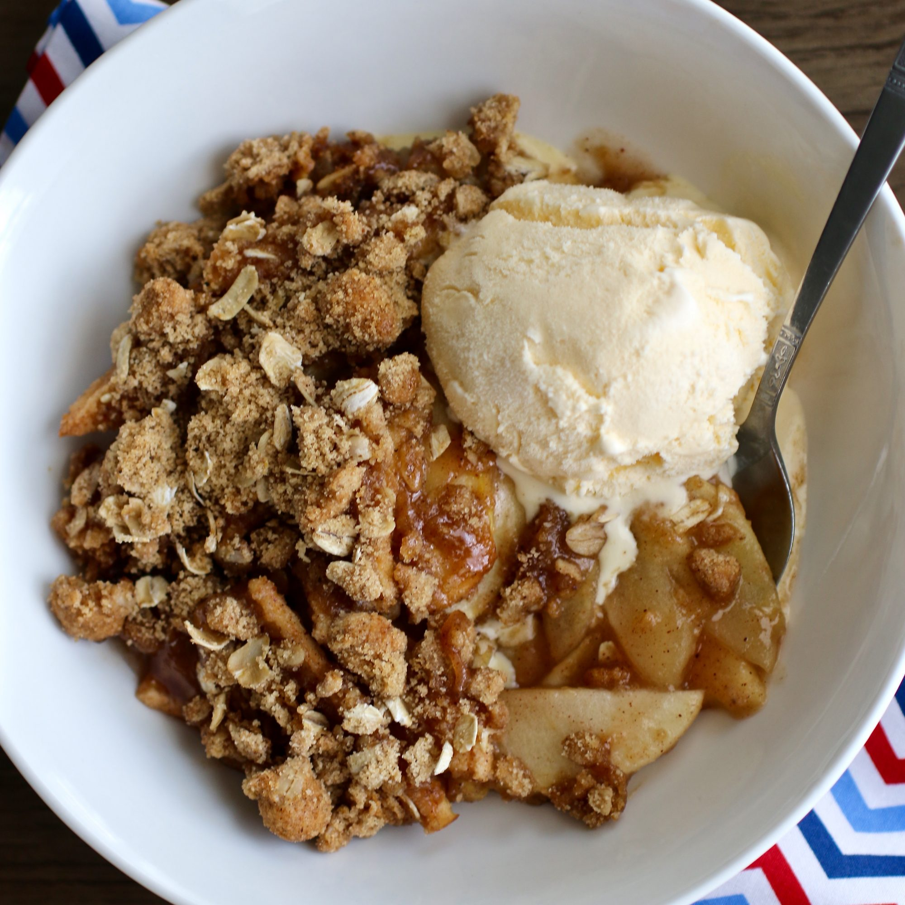

Apple Pie

Description
With over 6,000 5-star reviews, this is the most-loved apple crisp recipe on our site.
"Oh my gosh, this is delicious! I have never had such a delicious apple crisp!
I will never search for another recipe! I fixed this for my large, picky family for Thanksgiving.
There were no leftovers," says home cook Allyson Hester. Reviewers like to double the crumb topping,
use Granny Smith apples, and add nutmeg to the apple cinnamon mixture.
Ingredients
- 10 cups all-purpose apples, peeled, cored, and sliced
- 1 cup white sugar
- 1 tablespoon all-purpose flour
- 1 teaspoon ground cinnamon
- 1/2 cup water
- 1 cup quick-cooking oats
- 1 cup all-purpose flour
- 1 cup packed brown sugar
- 1/4 teaspoon bkaing powder
- 1/4 teaspoon baking soda
- 1/2 cup butter, melted
Steps
- Preheat oven to 350 degrees F (175 degrees C)
- Place the sliced apples in a 9x13 inch pan. Mix the white sugar, 1 tablespoon flour and ground cinnamon together, and sprinkle over apples. Pour water evenly all over
- Combine the oats, 1 cup flour, brown sugar, baking powder, baking soda and melted butter together. Crumble evenly over the apple mixture.
- Bake at 350 degrees F (175 degrees C) for about 45 minutes.
Return Home